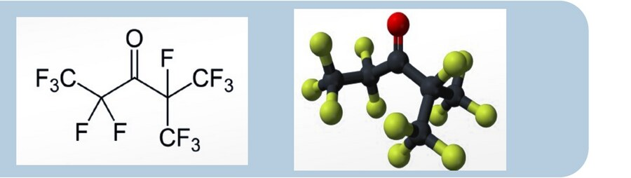
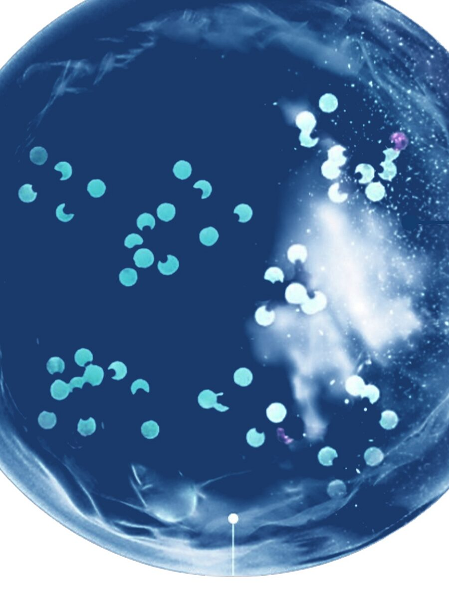

Heptafluoroisopropyl pentafluoroethyl ketone is widely used wherever water-based fire suppression would be impractical, or could damage the very equipment it's meant to protect.
Vaporises instantly on contact with heat, leaving zero cleanup after activation.
48kV breakdown voltage — equipment doesn't need to be de-energised before activation.
Zero ozone depleting potential, 0.014-year atmospheric lifetime, GWP under 1.
4–6% working concentration against a 10% NOAEL threshold — roughly 2x safety buffer built in.

A non-porous, temperature-sensitive, weatherproof and air-tight polymer shell holds the fire suppressing agent in a static, ready state — indefinitely, until heat says otherwise.

Fire heat is absorbed by the capsule's polymer shell, compromising its structural integrity until it can no longer contain the pressurised FK-5-1-12 inside.
FK-5-1-12 inside the capsule heats up and readies to vaporise. Rising internal pressure pushes outward — the shell swells and stretches until it triggers rupture.
The shell bursts and FK-5-1-12 floods the fire zone. No power, wiring or trigger needed — fire alone drives the entire sequence.
Burst capsules release FK-5-1-12 as mist and gas directly into the fire zone. The released agent absorbs heat from the fire, cooling it below the temperature needed to sustain combustion. Deprived of heat, the fire extinguishes.
Alongside cooling, the released FK-5-1-12 gas displaces oxygen within the enclosed space. Fire requires a minimum 15% oxygen concentration to sustain combustion — deprived of sufficient oxygen, the fire naturally extinguishes.
Catastrophic outcomes require the simultaneous failure of both active suppression and staff emergency procedures — a statistically near-impossible combination once AEGIS is deployed.
Baseline frequency: once every 10 years per high-stakes site (1.142E-05/hr).
Assumed to work 98% of the time (conservative). Failure rate: 0.02.
Assumed to work 99% of the time. Failure rate: 0.01.
Requires both failures at once: probability 2.28E-09/hr — once every 50,068 years.
AEGIS does not merely reduce fire severity — it effectively eliminates catastrophic risk from the planning horizon entirely.